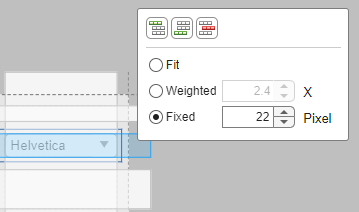
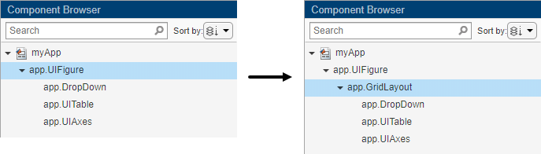
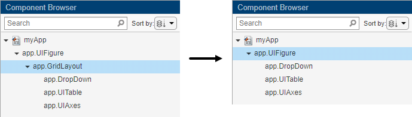

Use Grid Layout Managers in App Designer
Grid layout managers provide a way to lay out your app without having to set pixel
positions of UI components in Position vectors. For resizable apps,
grid layout managers provide more flexibility than the automatic resize behavior in App
Designer. They are also easier to configure than it is to code
SizeChangedFcn callback functions.
Add and Configure Grid Layout Manager
In App Designer, you can add a grid layout manager to a blank app or to empty container components within the figure.
To use a grid layout manager, drag a grid layout from the Component Library onto the canvas. Alternatively, you can right-click the figure or container and select Apply Grid Layout from the context menu. A grid layout manager spans the entire app window or container that you place it in. It is invisible unless you are actively configuring it on the App Designer canvas.
To configure the grid layout manager, in Design View, bring
the grid layout into focus by clicking in the area where you added it. Then, select
the button from the upper-left corner of the grid
layout manager, or right-click the grid layout and select Configure Grid
Layout. Then, select a row or column and from the Resize
Configuration menu, specify Fit,
Weighted, or Fixed. For more
information about these options, see GridLayout. You can also add or remove rows and columns. To view an
example with a configured grid layout, see Manage App Component Position and Sizing with Grid Layout.

Convert Components from Pixel-Based Positions to Grid Layout Manager
You can convert the components within a UI figure or container from pixel-based
positioning to a grid layout manager. When you apply a grid layout manager to a UI
figure or container that has components in it, the components get added to the grid
layout manager and their Position vectors get replaced by
Layout.Row and Layout.Column values that
specify their location in the grid. The component hierarchy also updates in the
Component Browser.

Grid layout managers support different properties than other container components. In some cases, you might need to update your callback code if it sets these types of properties, or if it sets component properties that are not available when they are managed by the grid layout. If your callbacks or other behaviors do not work as expected, then look for code patterns like the ones lists in this table.
| Symptom or Warning | Explanation | Suggested Action |
|---|---|---|
Warning: Unable to set 'Position', 'InnerPosition', or
'OuterPosition' for components in
'GridLayout'. | You cannot set the Position property on
components in a grid layout manager. | Specify a grid location for the component by setting the
Layout property with appropriate
Row and Column
values. |
Error using
matlab.ui.container.GridLayout/setThere
is no FontSize property on the GridLayout
class. | Properties you set on other container components might not be supported on the grid layout manager. | Update your code so that it sets properties on the intended container. |
| A context menu assigned to a container does not open in the running app. | When you add a grid layout manager to a container, it spans the entire container. This means that click events happen on the grid, instead of the container. | Reassign the context menu to the grid layout. |
Convert Components from Grid Layout Manager to Pixel-Based Positions
Starting in R2022a, you can also remove a grid layout manager from your app and convert the components in the grid to use pixel-based positioning. To remove a grid layout manager from a container, right-click the container in the canvas and select Remove Grid Layout.
When you remove a grid layout manager that has components in it from a UI figure
or container, the grid layout manager is deleted and the components get added to the
container that originally contained the grid layout manager. The
Layout.Row and Layout.Column values that
specified the component locations in the grid get replaced by
Position vectors. The component hierarchy also updates in the
Component Browser.

In some cases, you might need to update your callback code if it sets properties of the removed grid layout manager.
Example: Convert Components to Use Grid Layout Manager Instead of Pixel-Based Positions
This app shows how to apply a grid layout manager to the figure of an app that already has components in it. It also shows how to configure the grid layout manager so that the rows and columns automatically adjust to accommodate changes in size of text-based components.
Open the app in App Designer. In Design View, drag a grid layout manager into the figure.
Right-click the grid layout manager that you just added to the figure and select Configure Grid Layout from the context menu.
One-by-one, select the rows and columns of the grid that contain the drop-down menus and the table and change their resize configurations to Fit. When you are finished, verify that in the Inspector tab of the Component Browser, the ColumnWidth values are
12.64x,1.89x,fit,fit,fit,fitand the RowHeight values are1x,fit,1.93x,fit,3.07x,fit.Switch to Code View. Update each of the
DropDownValueChangedcallbacks so that theallchildfunctions set the font name and font size on components inapp.GridLayout, instead of inapp.UIFigure.Now run the app to see how the grid adjusts to accommodate the components as their sizes change.